Contents
- SI 221 : Reseaux de neurones
- 3.1 Rappel de la règle du perceptron
- Apprentissage du perceptron - la théorie
- Apprentissage du perceptron - implémentation
- 3.1.2 Effet d'une erreur sur une valeur
- 3.1.3 Effet d'une erreur "fatale" de saturation
- 3.1.4 Recherche d'une solution de type perceptron à un problème donné
SI 221 : Reseaux de neurones
3.1 Rappel de la règle du perceptron
Dans ce partie, on attribute 1 aux points de classe 1 et -1 aux points de class 2
im1 = ima2mat('data/landsattarasconC4');
image(im1)
colormap(gray(256))
samples = im1(:);
classes = sign(2 * (samples <= 30) -1);
Read from file: data/landsattarasconC4.dim
IMA file type ; values in [0, 255] ; size (512, 512)
Read from file: data/landsattarasconC4.ima
Image read !
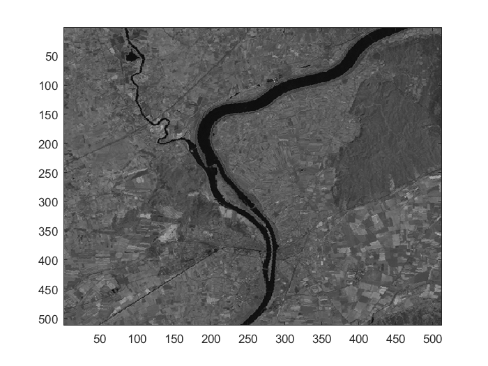 Apprentissage du perceptron - la théorie
D'après l'énonce du sujet, le vecteur d'état$\hat{X}$ est de dimension 1. Donc le vecteur 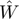 est de dimension 1. Dans ce cas, Le vecteur et le vecteur 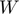 peut s'écrit sous la forme ci-dessous:
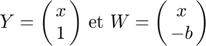
L'activiation du neurone est 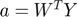 . La fonction de l'activation est 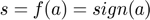 est le coeff du ligne qui est capable de bien classer les points dans la figure ci-dessous.
scatter(samples, classes)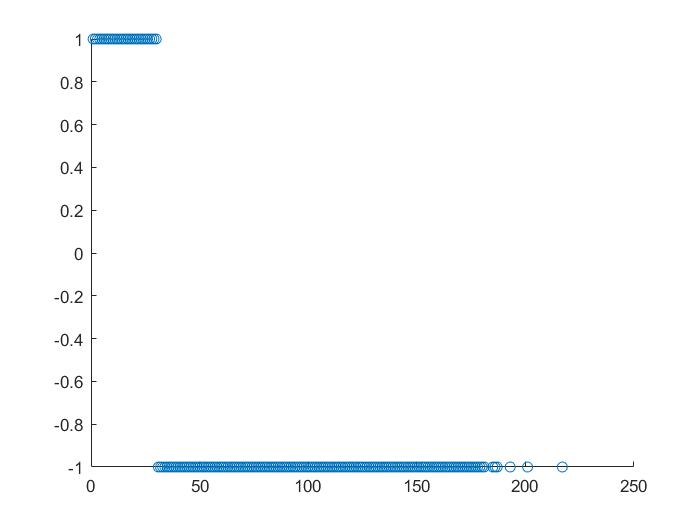
Apprentissage du perceptron - implémentation
[W, delta, buffer] = perceptron(samples, classes,0.01,3);
D'après la figure ci-dessous, on constate que converge dans le premier époques.
show_delta(delta, buffer)
ncol =
786432
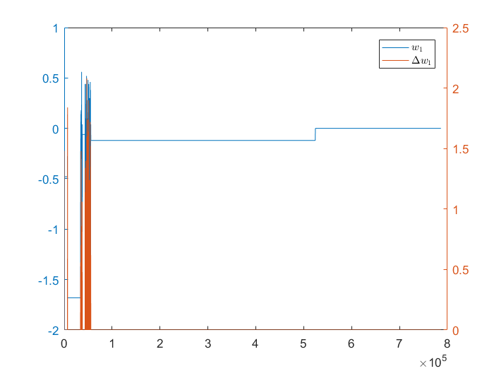 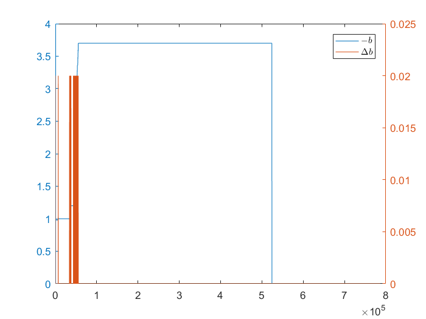 D'après la figure ci-dessous, tous les points sont bien classés.
show_res( W,samples, classes, [25,35], [-2,2] );
Accuracy rate 1.000000, Error rate 0.000000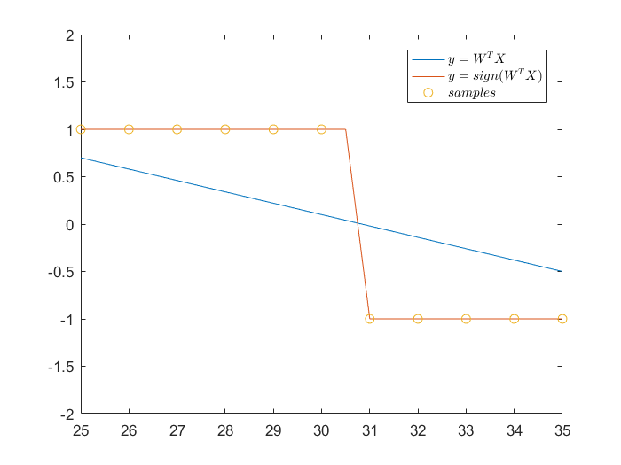
Si on prend 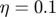, converge dans deuxième epoque. Mais le taux de bonne classification ne change pas.
[W2, delta2, buffer2] = perceptron(samples, classes,0.1,10); show_delta(delta2, buffer2) show_res( W2,samples, classes, [25,35], [-2,2] );
ncol =
2621440
Accuracy rate 1.000000, Error rate 0.000000
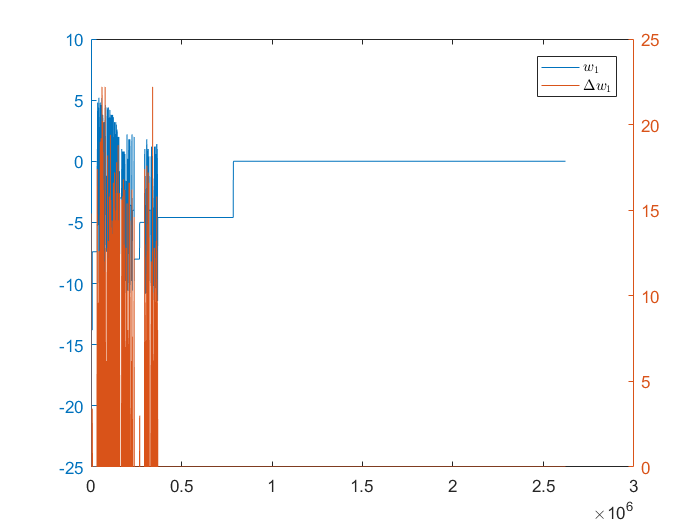 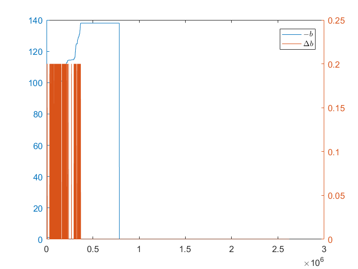 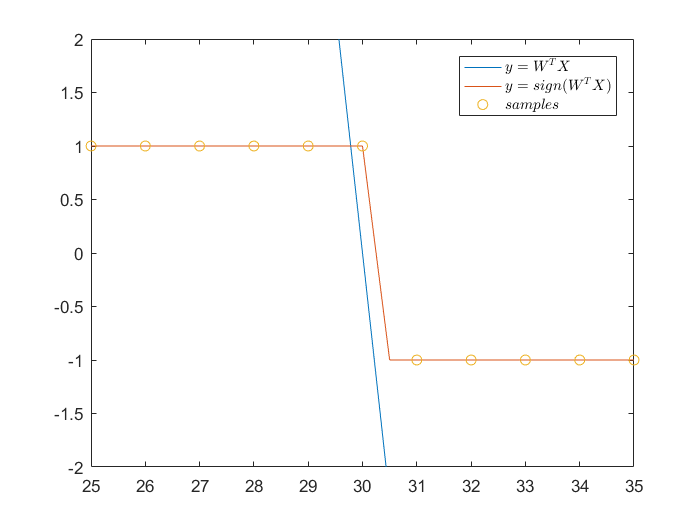 Il n'est pas normal que ce classifieur donne manifestement toujours le bon résultat. Car il est difficile d'obtenir les données sans brut.
3.1.2 Effet d'une erreur sur une valeur
2391 de pixels sont concernés par ce changement.
hist(samples == 110); nb_conserne = sum(samples == 110)
nb_conserne =
2391
classes_110 = sign(2 * ((samples <= 30) + (samples == 110)) -1); [W3, delta3, buffer3] = perceptron(samples, classes_110,0.01,10); show_delta(delta3, buffer3) show_res( W3,samples, classes_110, [1,255] , [-2,2] );
ncol =
2621440
Accuracy rate 0.990040, Error rate 0.009960
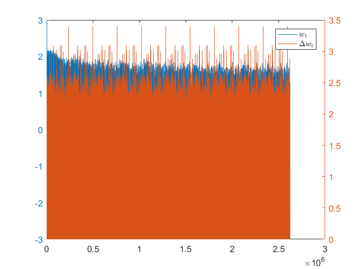 Même si les points concerné à valeur 110 sont très petit, il aussi une influence important sur le résultat. On peut imaginer que les autres points penvent rendre ce procesus stable, c'est à dire trouver une ligne qui est capable de bien classer les points ne pas conserné au value 110. Chaque fois le stabilité est détruit quand la processus rencontre les points conserné au value 110 et ces points biaisent le ligne.
3.1.3 Effet d'une erreur "fatale" de saturation
hist(samples >= 141); nb_conserne = sum(samples == 110)
nb_conserne =
2391
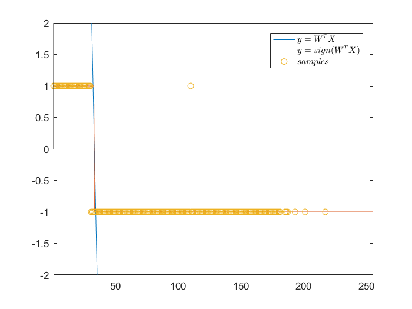 classes_140 = sign(2 * ((samples <= 30) + (samples >= 140)) -1); [W4, delta4, buffer4] = perceptron(samples, classes_140,0.01,10); show_delta(delta4, buffer4) show_res( W4,samples, classes_140, [1,255] , [-2,2] );
ncol =
2621440
Accuracy rate 0.956371, Error rate 0.043629
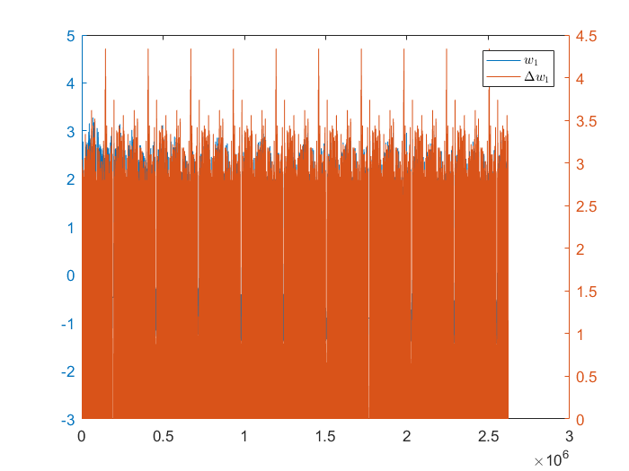 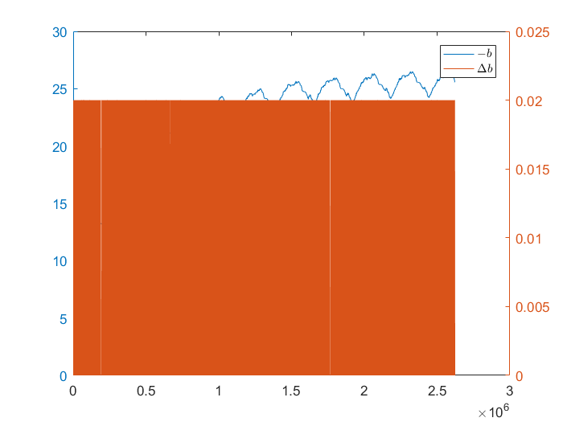 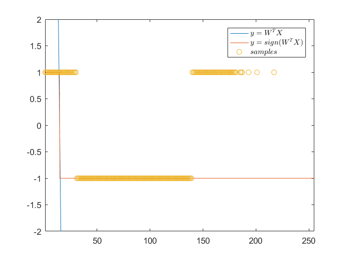 Sachant que le nombre de feature est limit. Ces porcessus a tenté de trouver une ligne qui est capable de classer tous points. Mais une ligne droite ne sont pas suffisant pour classer les points. On a besoin plus de couche de neurone afin de résoudre ces problème.
3.1.4 Recherche d'une solution de type perceptron à un problème donné
figure()
im3 = ima2mat('tarascon2Classes');
colormap(gray(2))
image(im3 + 1)
classes_mask = 2*im3(:)-1;
[W4, delta4, buffer4] = perceptron(samples, classes_mask,0.01,10);
show_delta(delta4, buffer4)
show_res( W4,samples, classes_mask, [1,255] , [-2,2] );
Read from file: tarascon2Classes.dim
IMA file type ; values in [0, 255] ; size (512, 512)
Read from file: tarascon2Classes.ima
Image read !
ncol =
2621440
Accuracy rate 0.781239, Error rate 0.218761
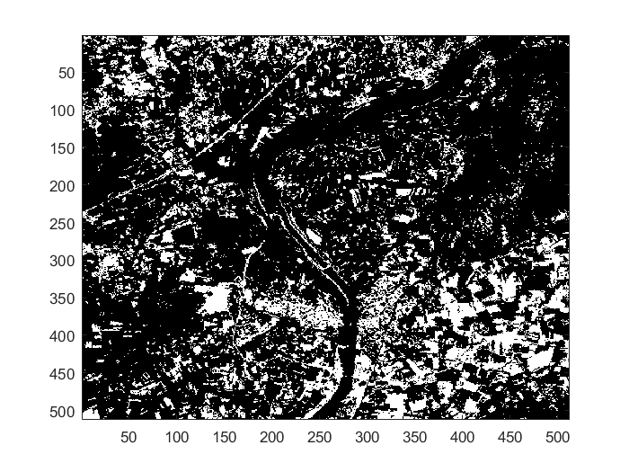 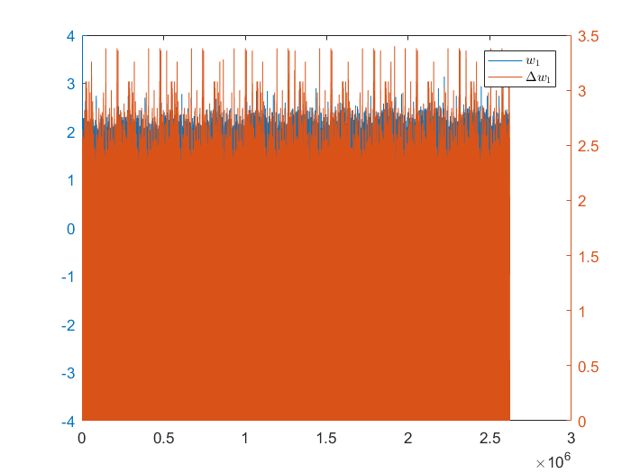 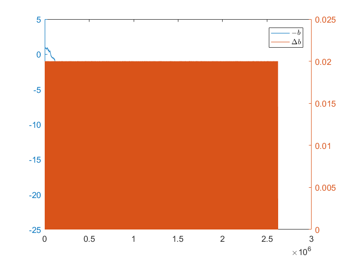 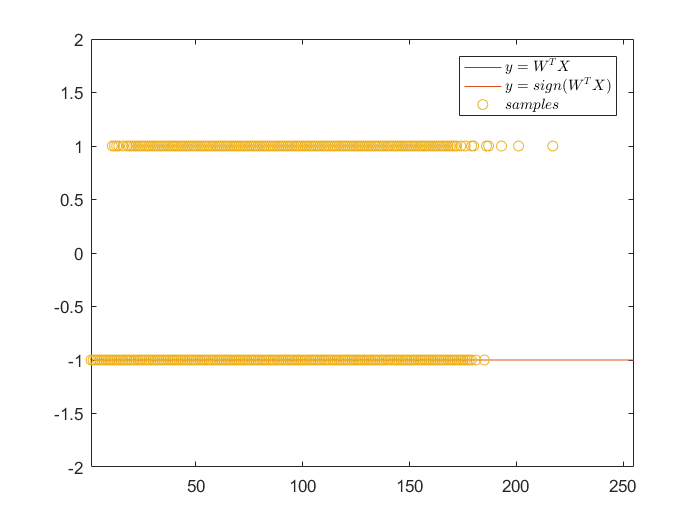 Il est possible d'apprendre à partir de ce masque un perceptron. Mais le taux de bonne classification est relativement bas. Mais il est mieux que on devine le result aléatorement.
Si on onsidère la position du pixel, la taux de bonne classification est reduit. Du coup, dans ce cas, une seule couche de reseau n'est plus suffisant.
nrow = size(im1,1); ncol = size(im1,2); samples_1 = zeros(nrow*ncol,3); for i=1:nrow for j=1:ncol samples_1((i-1)*ncol + j,:) = [i, j, im1(i,j)]; end end
n_iter = 10; W5 = ones(4,1); eta = 0.01; buffer = zeros(n_iter * size(samples,1),4); delta = zeros(n_iter * size(samples,1),4); taille = size(samples,1); as = size(n_iter * ncol*nrow,4); for k=1:n_iter for i= 1: ncol*nrow Y = [samples_1(i,:) , 1].'; a = sign( 2*((W5.' * Y)>=0)-1); as((k-1)*taille + i,:) = a; W_ = W5 - (a - classes_mask(i)) * eta * Y; buffer((k-1)*taille + i,:) = W_; delta((k-1)*taille + i,:) = abs(W_ - W5).'; W5 = W_; end end
accuracy = 0; for i=1:size(classes_mask) X = [samples_1(i,:) , 1].'; y_predit = sign( 2*((W5.' * X)>=0)-1); if(classes_mask(i) == y_predit) accuracy = accuracy + 1 ; else %fprintf('index %d, value %d, classes %d, prediction %d', i, samples(i),classes(i), y_predit); end end fprintf('Accuracy rate %f, Error rate %f\n', accuracy / taille, 1.0 - accuracy / taille);
Accuracy rate 0.646694, Error rate 0.353306